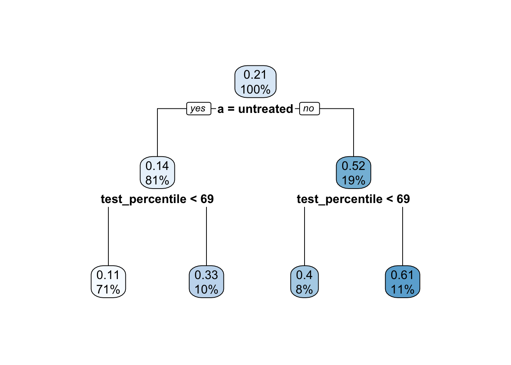
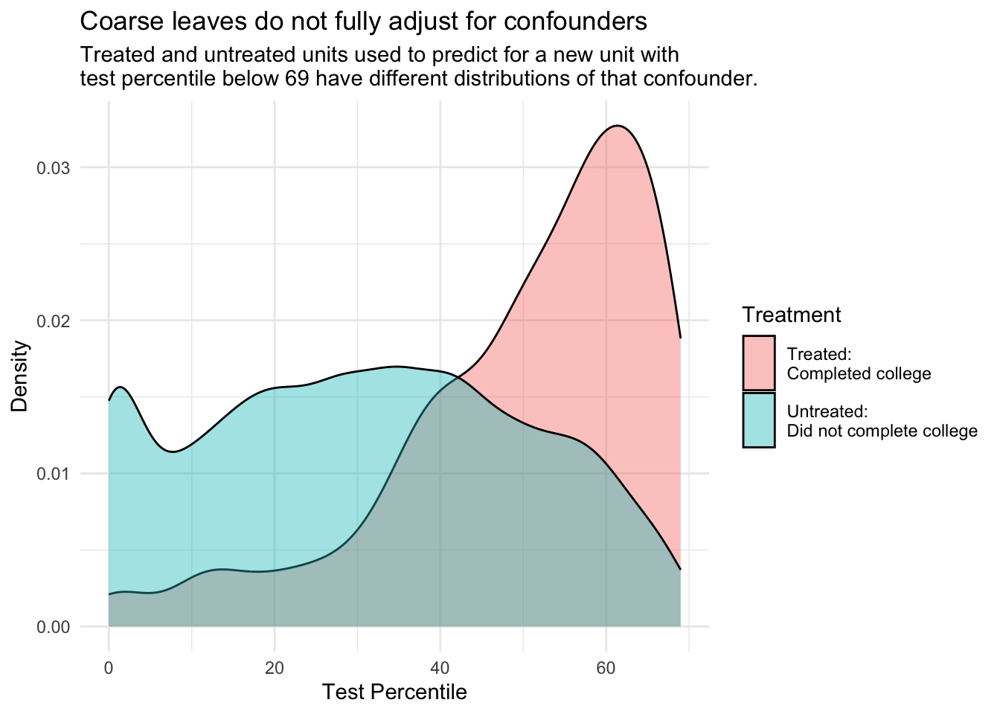

library(dplyr)Prediction for causal and population inference
Here are slides and a pdf of this page.
This session will be about prediction to draw population inference from non-probability samples and causal inference from observational studies, both of which involve analogous assumptions and estimators. If you have a Census with features \(\vec{X}\), ignorable sampling conditional on \(\vec{X}\), and a good sample estimator of \(E(Y\mid\vec{X})\) then you can predict \(E(Y\mid\vec{X})\) and aggregate over the Census-known population distribution of \(\vec{X}\). For causal inference, being assigned to treatment is analogous to being sampled to observe the potential outcome under treatment.
Prediction to describe with non-probability samples
Suppose you collect a non-probability sample, such as people willing who respond on a survey on Amazon Mechanical Turk. Each person answers three questions:
- What is your sex?
- What is your age?
- Have you ever had a TikTok account?
You want to estimate the rate of using TikTok in the full U.S. population. But you worry about your sample: perhaps the age distribution of your sample is younger than the U.S. population, and younger people are more likely to have a TikTok account. Formally, whether a unit is sampled \(S\) is not independent of that unit’s outcome \(Y\).
\[ S \not\unicode{x2AEB} Y \]
You hope that it might help that your survey also measured sex and age. One thing you might do is to use logistic regression to estimate an outcome model to predict the probability of having a TikTok within these subgroups,
\[\text{logit}\left(\hat{\text{P}}(Y = 1\mid S = 1, \vec{X})\right) = \hat\beta_0 + \hat\beta_1(\text{Sex = Female}) + \hat\beta_2 (\text{Age})\]
where \(\vec{X}\) contains the variables sex and age. Now you can predict the probability of having a TikTok within any subgroup defined by sex and age.
But how to use these predictions? You might think it would help to have the population distribution of sex and age from the U.S. Census Bureau. From these data, you know the population distribution of \(\vec{X}\).
\[ {\text{P}}(\vec{X} = \vec{x}) \text{ is known for all }\vec{x} \]
You have an estimate of \({\text{P}}(Y = 1\mid S, \vec{X} = \vec{x})\) and a known value for \({\text{P}}(\vec{X} = \vec{x})\). We would like to estimate the population mean by averaging the subgroup predictions over the distribution of subgroups.
\[ {\text{P}}(Y) = \sum_{\vec{x}}\text{P}(Y\mid\vec{X} = \vec{x}){\text{P}}(\vec{X} = \vec{x}) \] But unfortunately, you still do not know the population mean TikTok use within groups defined by sex and age! While you have an estimate in your sample \(\hat{\text{P}}(Y \mid S = 1, \vec{X} = \vec{x})\) this may not be the same as the population mean \(\text{P}(Y\mid\vec{X} = \vec{x})\).
Here we will make a heroic assumption1 of conditionally ignorable sampling:
\[ S \unicode{x2AEB} Y \mid \vec{X} \qquad (\text{equivalently}) \qquad {\text{P}}(Y\mid S = 1, \vec{X} = \vec{x}) = {\text{P}}(Y \mid \vec{X} = \vec{x}) \] This assumption says that whether one is sampled \(S\) tells me nothing about TikTok use \(Y\) once I am looking within a subgroup of people of a particular age and particular sex (\(\vec{X} = \vec{x}\)).
Group task. Draw a DAG to defend this assumption. Note possible edges that would undermine this assumption.
If the assumption holds, one can use the predicted values from the regression to estimate the population average value of \(Y\).
\[ \hat{\text{P}}(Y) = \sum_{\vec{x}}\hat{\text{P}}(Y\mid\vec{X} = \vec{x}){\text{P}}(\vec{X} = \vec{x}) \]
This suggests a procedure to use regression to estimate population means:
- measure \(\vec{X}\) and \(Y\) in a non-probability sample
- measure \(\vec{X}\) in a probability sample or census
- assume exchangeable sampling given \(\vec{X}\)
- (often a heroic assumption!)
- model \(\text{E}(Y\mid\vec{X})\) or \(\text{P}(Y\mid\vec{X})\) in the non-probability sample
- estimate \(\text{P}(\vec{X} = \vec{x})\) in the probability sample or census
- re-aggregate \(\hat{\text{E}}(Y\mid\vec{X})\) using the weights \(\hat{\text{P}}(\vec{X} = \vec{x})\)
You could also use a weighting procedure, to be discussed next class.
Real example: Xbox survey
In a survey carried out in 2012 on the Xbox gaming platform, Wang et al. (2015) asked respondents: “If the election were held today, who would you vote for?”
Why might this survey make for poor forecasts of the election outcome? The respondents looked very different from the U.S. electorate, notably much younger and much more likely to be men (see Fig 1 in the original paper). But the data were also very rich. There were over 700,000 responses. The researchers collected many demographic variables: sex, race, age, education, state, party ID, political ideology, and who they voted for in the 2008 presidential election.
Using these variables, the authors used a multilevel model to estimate the probability of supporting Obama in the 2012 presidential election. Under an assumption of exchangeable sampoling within subgroups, they were able to proportion supporting Obama within each subgroup \(\vec{X} = \vec{x}\).
\[ \hat{\text{P}}(Y = 1\mid S = 1,\vec{X} = \vec{x}) = \text{logit}^{-1}(\text{complicated function of }\vec{x}) \] Then the authors used exit poll data from the 2008 election to estimate the population distribution of \(\vec{X}\). They worked under the assumption that the 2012 electorate would be demographically similar to the 2008 electorate. Putting these together, they produced an overall estimate:
\[ \hat{\text{P}}(Y = 1) = \sum_{\vec{x}}\underbrace{\hat{\text{P}}(\vec{X} = \vec{x})}_{\substack{\text{Stratum size,}\\\text{estimated from}\\\text{2008 exit polls}}}\underbrace{\hat{\text{P}}(Y = 1\mid S = 1,\vec{X} = \vec{x})}_{\substack{\text{Prediction within the stratum,}\\\text{estimated from Xbox survey}}} \]
They also made predictions within particular states…and the predictions were remarkably accurate! Conditionally exchangeable sampling may be a heroic assumption, but it worked well in this particular case.
Takeaways: Prediction to describe
Predictive outcome models can greatly improve the usefulness of non-probability samples for population inferences. But there are a few key requirements to remember.
First, you are studying \(Y\) but the real key is \(\vec{X}\)!
- \(\vec{X}\) must create conditional exchangeability: \(S\indep Y\mid\vec{X}\)
- \(\vec{X}\) must be measured in a probability sample or census
- \(\vec{X}\) must be measured in the non-probability sample
Consideration (1) may require a very extensive set of variables be included in \(\vec{X}\). But even if you can measure them in your non-probability sample (2), you need to also be able to estimate their population distribution (3). In practice, the feasibility of (3) often leads to estimates that use only a small set of \(\vec{X}\) variables, rendering (1) perhaps less credible.
Second, the task of moving from a non-probability sample to a population estimate does not necessarily require an outcome model; it can also be carried out by weighting (next class). The added benefit of a model is that it might produce better subgroup mean estimates \(\text{E}(Y\mid\vec{X} = \vec{x})\) by pooling information across subgroups (e.g., by a line).
Causal inference: Example on paper
Prediction for causal inference proceeds by the same general process. For simplicity, we will assume one probability sample.
- assume conditional exchangeability: \(\{Y^1,Y^0\} \unicode{x2AEB} A\mid \vec{X}\)
- model \(\text{E}(Y\mid A,\vec{X})\)
- predict \(Y^1\) and \(Y^0\) for all units
- average over units
We will start with a simple example that can be carried out on paper. Suppose a researcher estimates the following regression of \(Y\) on treatment \(A\) and a confounder \(X\), which we assume is a sufficient adjustment set.
\[ \hat{\text{E}}(Y\mid \vec{X}, A) = \hat\beta_\text{Intercept} + \hat\beta_X X + \hat\beta_A A + \hat\beta_{XA} X A \]
A hypothetical set of estimates are provided below. \[ \begin{aligned} \hat\beta_\text{Intercept} &= 0 \\ \hat\beta_X &= 1 \\ \hat\beta_A &= 2 \\ \hat\beta_{XA} &= 1 \\ \end{aligned} \]
You want to estimate the average treatment effect over a population of four units. Using this model, can you fill in estimates for \(\hat{Y}^1\) and \(\hat{Y}^0\)? What is the average causal effect?
| ID | \(X\) | \(\hat{Y}^1\) | \(\hat{Y}^0\) | \(\hat{Y}^1 - \hat{Y}^0\) |
|---|---|---|---|---|
| 1 | 0 | ? | ? | ? |
| 2 | 1 | ? | ? | ? |
| 3 | 1 | ? | ? | ? |
| 4 | 1 | ? | ? | ? |
Causal inference with OLS: Simulated example in code
Next, we consider outcome modeling for causal inference using simulated data in code. The code below will generate a dataset of \(n = 100\) observations. Each observation contains several observed variables:
L1A numeric confounderL2A numeric confounderAA binary treatmentYA numeric outcome
Each observation also contains outcomes that we know only because the data are simulated. These variables are useful as ground truth in simulations.
propensity_scoreThe true propensity score \(P(A = 1 \mid \vec{L})\)Y0The potential outcome under controlY1The potential outcome under treatment
To run this code, you will need the dplyr package. If you don’t have it, first run the line install.packages("dplyr") in your R console. Then, add this line to your R script to load the package.
If you want your simulation to match our numbers exactly, add a line to set your seed.
set.seed(90095)n <- 500
data <- tibble(
L1 = rnorm(n),
L2 = rnorm(n)
) |>
# Generate potential outcomes as functions of L
mutate(Y0 = rnorm(n(), mean = L1 + L2, sd = 1),
Y1 = rnorm(n(), mean = Y0 + 1, sd = 1)) |>
# Generate treatment as a function of L
mutate(propensity_score = plogis(-2 + L1 + L2)) |>
mutate(A = rbinom(n(), 1, propensity_score)) |>
# Generate factual outcome
mutate(Y = case_when(A == 0 ~ Y0,
A == 1 ~ Y1))A simulation is nice because the answer is known. In this simulation, the conditional average causal effect of A on Y equals 1 at any value of L1 and L_2.
Because the causal effect of A on Y is identified by adjusting for the confounders L1 and L2, we can estimate by outcome modeling.
- Model \(E(Y\mid A, L_1, L_2)\), the conditional mean of \(Y\) given the treatment and confounders
- Predict potential outcomes
- set
A = 1for every unit. Predict \(Y^1\) - set
A = 0for every unit. Predict \(Y^0\)
- set
- Aggregate to the average causal effect
1) Model
The code below uses Ordinary Least Squares to estimate an outcome model.
model <- lm(Y ~ A*(L1 + L2), data = data)
Call:
lm(formula = Y ~ A * (L1 + L2), data = data)
Residuals:
Min 1Q Median 3Q Max
-4.1448 -0.7105 0.0097 0.6998 3.1743
Coefficients:
Estimate Std. Error t value Pr(>|t|)
(Intercept) 0.01606 0.05699 0.282 0.77827
A 1.11555 0.18021 6.190 1.26e-09 ***
L1 1.06333 0.05938 17.907 < 2e-16 ***
L2 1.11199 0.05951 18.685 < 2e-16 ***
A:L1 -0.39475 0.14279 -2.765 0.00591 **
A:L2 -0.28935 0.13940 -2.076 0.03844 *
---
Signif. codes: 0 '***' 0.001 '**' 0.01 '*' 0.05 '.' 0.1 ' ' 1
Residual standard error: 1.111 on 494 degrees of freedom
Multiple R-squared: 0.6732, Adjusted R-squared: 0.6699
F-statistic: 203.6 on 5 and 494 DF, p-value: < 2.2e-16We chose a model where treatment A is interacted with an additive function of confounders L1 + L2. This is also known as a t-learner (Kunzel et al. 2019) because it is equivalent to estimating two separate regression models of outcome on confounders, one among those for whom A == 1 and among those for whom A == 0.
2) Predict
The code below predicts the conditional average potential outcome under treatment and control at the confounder values of each observation.
First, we create data with A set to the value 1.
data_1 <- data |>
mutate(A = 1)# A tibble: 500 × 7
L1 L2 Y0 Y1 propensity_score A Y
<dbl> <dbl> <dbl> <dbl> <dbl> <dbl> <dbl>
1 0.00304 1.03 0.677 1.59 0.276 1 0.677
2 -2.35 -1.66 -4.09 -3.53 0.00244 1 -4.09
3 0.104 -0.912 0.0659 1.31 0.0569 1 0.0659
# ℹ 497 more rowsThen, we create data with A set to the value 0.
data_0 <- data |>
mutate(A = 0)# A tibble: 500 × 7
L1 L2 Y0 Y1 propensity_score A Y
<dbl> <dbl> <dbl> <dbl> <dbl> <dbl> <dbl>
1 0.00304 1.03 0.677 1.59 0.276 0 0.677
2 -2.35 -1.66 -4.09 -3.53 0.00244 0 -4.09
3 0.104 -0.912 0.0659 1.31 0.0569 0 0.0659
# ℹ 497 more rowsWe use our outcome model to predict the conditional mean of the potential outcome under each scenario.
predicted <- data |>
mutate(
Y1_predicted = predict(model, newdata = data_1),
Y0_predicted = predict(model, newdata = data_0),
effect_predicted = Y1_predicted - Y0_predicted
)# A tibble: 500 × 10
L1 L2 Y0 Y1 propensity_score A Y Y1_predicted
<dbl> <dbl> <dbl> <dbl> <dbl> <int> <dbl> <dbl>
1 0.00304 1.03 0.677 1.59 0.276 0 0.677 1.98
2 -2.35 -1.66 -4.09 -3.53 0.00244 0 -4.09 -1.81
3 0.104 -0.912 0.0659 1.31 0.0569 0 0.0659 0.451
# ℹ 497 more rows
# ℹ 2 more variables: Y0_predicted <dbl>, effect_predicted <dbl>3) Aggregate
The final step is to aggregate to an average causal effect estimate.
aggregated <- predicted |>
summarize(average_effect_estimate = mean(effect_predicted))# A tibble: 1 × 1
average_effect_estimate
<dbl>
1 1.13Logistic regression: A realistic simulated example
This section illustrates outcome modeling with a more realistic simulated dataset involving many confounders. We also use logistic regression as our outcome model.
Data-based simulation
To what extent does completing a four-year college degree by age 25 increase the probability of having a spouse or residential partner with a four-year college degree at age 35, among the population of U.S. residents who were ages 12–16 at the end of 1996?
This causal question draws on questions in sociology and demography about assortative mating: the tendency of people with high education, income, or status to form households together2. One reason to care about assortative mating is that it can contribute to inequality across households: if people with high earnings potential form households together, then income inequality across households will be greater than it would be if people formed households randomly.
Our question is causal: to what extent is the probability of marrying a four-year college graduate higher if one were hypothetically to finish a four-year degree, versus if that same person were hypothetically to not finish a college degree? But in data that exist in the world, we see only one of these two potential outcomes. The people for whom we see the outcome under a college degree are systematically different from those for whom we see the outcome under no degree: college graduates come from families with higher incomes, higher wealth, and higher parental education, for example. All of these factors may directly shape the probability of marrying a college graduate even in the absence of college. Thus, it will be important to adjust for a set of measured confounders, represented by \(\vec{X}\) in our DAG.

By adjusting for the variables \(\vec{X}\), we block all non-causal paths between the treatment \(A\) and the outcome \(Y\) in the DAG. If this DAG is correct, then conditional exchangeability holds with this adjustment set: \(\{Y^1,Y^0\}\unicode{x2AEB} A \mid\vec{X}\).
To estimate, we use data from the National Longitudinal Survey of Youth 1997, a probability sample of U.S. resident children who were ages 12–16 on Dec 31, 1996. The study followed these children and interviewed them every year through 2011 and then every other year after that.
We will analyze a simulated version of these data (nlsy97_simulated.csv), which you can access with this line of code.
all_cases <- read_csv("https://ilundberg.github.io/soc212b/data/nlsy97_simulated.csv")
Expand to learn how to get the actual data
To access the actual data, you would need to register for an account, log in, upload the nlsy97.NLSY97 tagset that identifies our variables, and then download. Unzip the folder and put the contents in a directory on your computer. Then run our code file prepare_nlsy97.R in that folder. This will produce a new file d.RDS, contains the data. You could analyze that file. In the interest of transparency, we wrote the code nlsy97_simulated.R to convert these real data to simulated data that we can share.
The data contain several variables
idis an individual identifier for each personais the treatment, containing the respondent’s education codedtreatedif the respondent completed a four-year college degree anduntreatedif not.yis the outcome:TRUEif has a spouse or residential partner at age 35 who holds a college degree, andFALSEif no spouse or partner or if the spouse or partner at age 35 does not have a degree.- There are several pre-treatment variables
sexis codedFemaleandMaleraceis race/ethnicity and is codedHispanic,Non-Hispanic Black, andNon-Hispanic Non-Black.mom_educis the respondent’s mother’s education as reported in 1997. It takes the valueNo momif the child had no residential mother in 1997, and otherwise is coded with her education:< HS,High school,Some college, orCollege.dad_educis the respondent’s father’s education as reported in 1997. It takes the valueNo dadif the child had no residential father in 1997, and otherwise is coded with his education:< HS,High school,Some college, orCollege.log_parent_incomeis the log of gross household income in 1997log_parent_wealthis the log of household net worth in 1997test_percentileis the respondent’s percentile score on a test of math and verbal skills administered in 1999 (the Armed Services Vocational Aptitude Battery).
When values are missing, we have replcaed them with predicted values. In the simulated data, no row represents a real person because values have been drawn randomly from a probability distribution designed to mimic what exists in the real data. As discussed above, we did this in order to share the file with you by a download on this website.
1) Model
One can estimate outcome models using all the data (as in the example above) or separately by treatment status. In this example, we use the latter option.
untreated_cases <- all_cases |> filter(a == "untreated")
treated_cases <- all_cases |> filter(a == "treated")We use the untreated cases to estimate a model for \(Y^0\) as a function of \(X\). If our data include sampling weights, then we weight this model by the sampling weights.
logistic_model_for_y0 <- glm(
y ~ sex + race + mom_educ + dad_educ + log_parent_income +
log_parent_wealth + test_percentile,
family = binomial,
data = untreated_cases,
weights = sampling_weight
)Likewise, we estimate a model for \(Y^1\) among treated units.
logistic_model_for_y1 <- glm(
y ~ sex + race + mom_educ + dad_educ + log_parent_income +
log_parent_wealth + test_percentile,
family = binomial,
data = treated_cases,
weights = sampling_weight
)These models return a warning that there is a non-integer number of successes. This is normal and not a concern when estimating logistic regression models with weights.
2) Predict
We then predict the probability of \(Y\) under each treatment condition, using type = "response" to predict the probability of \(Y\) instead of the log odds of \(Y\).
logistic_predicted_potential_outcomes <- all_cases |>
mutate(
yhat1 = predict(
logistic_model_for_y1,
newdata = all_cases,
type = "response"
),
yhat0 = predict(
logistic_model_for_y0,
newdata = all_cases,
type = "response"
),
effect = yhat1 - yhat0
)# A tibble: 7,688 × 6
id sampling_weight a yhat1 yhat0 effect
<dbl> <dbl> <chr> <dbl> <dbl> <dbl>
1 1 0.989 untreated 0.254 0.0861 0.168
2 2 0.999 treated 0.726 0.562 0.164
3 3 0.967 untreated 0.177 0.0261 0.151
# ℹ 7,685 more rows3) Aggregate
We can then aggregate the predicted potential outcomes to estimate the average treatment effect over all cases (ATT),
logistic_ate_estimate <- logistic_predicted_potential_outcomes |>
summarize(ate = weighted.mean(effect, w = sampling_weight)) |>
print()# A tibble: 1 × 1
ate
<dbl>
1 0.204or among those who were factually treated or untreated,
logistic_predicted_potential_outcomes |>
group_by(a) |>
summarize(conditional_average_effect = weighted.mean(effect, w = sampling_weight))# A tibble: 2 × 2
a conditional_average_effect
<chr> <dbl>
1 treated 0.240
2 untreated 0.195or among any subpopulation by grouping by any confounding variables.
We estimate that completing college increases the probability of having a college-educated by 0.204. This causal conclusion relies both on our causal assumptions (the DAG) and our statistical assumptions (the chosen model).
Machine learning outcome models for causal inference
Outcome models for causal inference just need to be input-output machines:
- input \(\vec{X}\) and a treatment value \(a\)
- output \(\hat{Y}^a = \text{E}(Y\mid A = a, \vec{X})\)
Machine learning estimators can be used as the algorithm to make the predictions.
A promising story
Many researchers increasingly turn to machine learning estimators in the service of causal inference. Some of the early advances involved direct plug-ins, where a machine learning function
\[\hat{f}:\{A,\vec{X}\} \rightarrow \hat{Y}\]
is learned to map values of treatment \(A\) and confounders \(\vec{X}\) to a predicted outcome \(\hat{Y}\). Viewed this way, one can use any machine learning approach as an estimator of an average causal effect.
\[ \hat{\text{E}}(Y^1 - Y^0) = \frac{1}{n}\sum_i \left(\hat{f}(1,\vec{x}_i) - \hat{f}(0,\vec{x}_i)\right) \]
A widely-cited early application was Hill (2011), which used Bayesian Additive Regression Trees (BART) to model the response surface and then predict to estimate average causal effects and many conditional average effects. By outsourcing the functional form to an algorithm, approaches like this free the researcher to focus on the causal question and the DAG rather than the assumed functional form of statistical relationships. These algorithmic approaches often performed well in competitions where statisticians applied a series of estimators to simulated data to see who would come closest to the true causal effects (known in simulation, see Dorie et al. 2019). Recently, new developments have expanded tree and forest estimators to explicitly address causal questions (e.g., Athey & Imbens 2016).
A warning example
There are many reasons to be optimistic, but one also must be cautious: it is also possible for a machine learning model that predict \(Y\) well to be a poorly performing estimator of a causal effect.
- there may be unmeasured confounding
- the regularization in machine learning models can induce a large bias
- to predict \(Y^1\), the model is trained on treated units. But untreated units may have a very different distribution of \(\vec{X}\)
As an example, using our simulated data from above, suppose a researcher models \(Y\mid A, \vec{X}\) using a regression tree, which they plan to use to predict \(Y^1\) and \(Y^0\) for all cases.
library(rpart)
set.seed(90095)
fit <- rpart(
y ~ a + sex + race + mom_educ + dad_educ + log_parent_income +
log_parent_wealth + test_percentile,
data = all_cases
)
rpart.plot::rpart.plot(fit)
There are some concerns with this tree:
- Most variables were never used in splitting
- It split on
test_percentile, but only coarsely: each leaf contains a wide range oftest_percentilevalues
As a result, each leaf contains a wide range of values on the confounding variables \(\vec{X}\). If you imagine predicting \(Y^0\) and \(Y^1\) for a new unit with \(\vec{X} = \vec{x}\), the untreated cases and the treated cases that are averaged into these predictions will have \(\vec{X}\) values that are widely ranging, not equal to \(\vec{X}\) and not equally distributed between the treated and the untreated.
Code
all_cases |>
filter(test_percentile < 69) |>
ggplot(aes(x = test_percentile, fill = a)) +
geom_density(alpha = .4) +
theme_minimal() +
ylab("Density") +
xlab("Test Percentile") +
scale_fill_discrete(
name = "Treatment",
labels = c("Treated:\nCompleted college","Untreated:\nDid not complete college")
) +
theme(legend.key.height = unit(.4,"in")) +
ggtitle(
"Coarse leaves do not fully adjust for confounders",
subtitle = "Treated and untreated units used to predict for a new unit with\ntest percentile below 69 have different distributions of that confounder."
)
There exist work-around solutions for this problem, such as methods to carry out further confounder adjustment within leaves to better estimate causal effects (Brand et al. 2021). These problems and solutions from causal inference point to a general fact: off-the-shelf algorithms to predict \(Y\) typically involve data-driven choices (e.g., prune the tree) that lead to better predictions of \(Y\), but in some cases those same choices can lead to worse estimates of causal effects (\(Y^1 - Y^0\)).
In the coming weeks, we will learn how to make better use of machine learning algorithms for causal inference by combining treatment models and outcome models.
Footnotes
Heroic assumptions are assumptions that do a lot of work to make our quantities of interest identified. When I use “heroic”, I often mean an assumption that is not very credible.↩︎
For reviews, see Mare 1991 and Schwartz 2013.↩︎